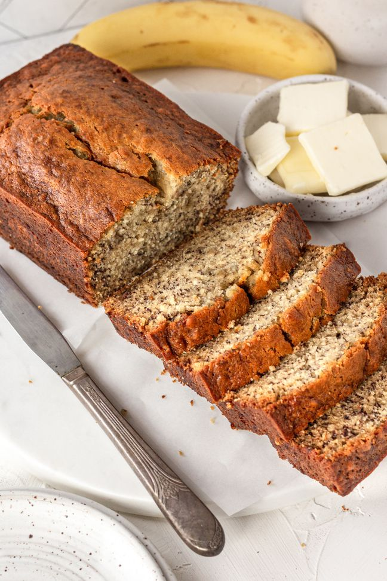

Banana Bread

Description
This banana bread has been the most popular recipe on
Simply Recipes
for over 10 years. Thousands of people make it every day. Why?
Because it really is the best banana bread recipe, period. You can mix
everything in one bowl, you can vary the amount of sugar or bananas. And the
secret to its great flavor? Melted butter.
Ingredients
- 2 to 3 medium ripe bananas, mashed
- 1/3 cup butter, melted
- 1/2 teaspoon baking soda
- 1 pinch salt
- 3/4 cup sugar
- 1 large egg, beaten
- 1 teaspoon vanilla extract
- 1 1/2 cups (205g) all-purpose flour
Steps
- Preheat the oven to 350°F and prepare the pan
-
Mash the bananas and add the butter: In a mixing bowl, mash the ripe bananas
with a fork until completely smooth. Stir the melted butter into the mashed
bananas
-
Mix in the remaining ingredients: Mix in the baking soda and salt. Stir in
the sufar, beaten egg, and vanilla extract. Mix in the flour.
-
Bake the bread: pour the batter into your prepared laof pan. Bake for 55 to
65 minutes at 350°F or until a toothpick or wooden skewer comes out clean
-
Cool and serve: Remove from oven and let cool in the pan for a few minutes.
Then remove the banana bread from the pan and let cool completely before
serving.
Homepage